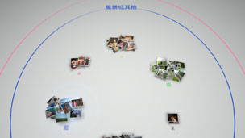

整理相片
替相片分類
依以下項目替選擇的活動相片分類。選擇活動再按下 按鈕，可選擇
按鈕，可選擇 （分類）。分類後再選擇（分類），即可再細分相片。
（分類）。分類後再選擇（分類），即可再細分相片。
| 時間 | 依攝影日期和時間分類 |
|---|---|
| 人數 | 依相片內的人數分類 |
| 年齡 | 依像小嬰兒的照片、像兒童的照片、像大人的照片等項目分類 |
| 表情 | 依笑容及其他分類 |
| 顏色 | 依相片的顏色分類 |
| 攝影機 | 按拍攝的攝影機分類 |
| 遊戲 | 按遊戲的螢幕截圖及其他分類 |
| 專輯 | 依XMB™的 （相片）設定的專輯分類 （相片）設定的專輯分類 |
提示
- 若在選擇分類項目的畫面點選[全選]，即會替相片庫區域內的全部相片進行分類。
- 某些相片可能無法正確分類。
- 可選擇已分類的相片自行建立播放目錄。
分類的例子：收集拍到小孩微笑的相片
1. |
選擇 |
|---|---|
2. |
選擇分類為［兒童］的相片並按下 |
3. |
選擇 |
分類的例子：找尋藍天的相片
1. |
選擇 |
|---|---|
2. |
選擇收集至［風景或其他］內的相片並按下 |
3. |
選擇  |
刪除相片
選擇想刪除的相片或專輯並按下按鈕，再選擇 （刪除）。
（刪除）。
提示
已刪除的相片，也會從PS3™主機儲存空間中刪除。